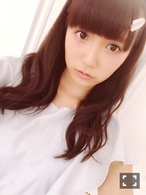
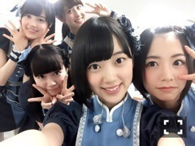

| 2015/09 24 Thu | ひめたん-0o0-その574 |

22日は個別握手会でした！
来てくださったみなさん
ありがとうございました( ˇωˇ )
写真撮るの忘れてた......
ごめんね～
来てくださった人のお楽しみ、かな？♡
1•2部 ルームウェア
3•4部 パンツスタイル
ルームウェアは
NOGIROOMで着たのとはまた別のやつ。
ジェラートピケだよ～＊
実は体調が良くなくて
気遣わせてしまってごめんなさい( ´•̥ω•̥` )
みなさんとお話できて
たくさんパワーをもらいました♡♡
次の日寝てたら元気になったよ！
でも次からは
万全にして握手会行くね。
どんどん無茶振りしてください。笑
10月はハロウィンしようかな～
何着るか考え中。リクエストある？
また会えるの楽しみにしてるね。

日曜の夜はらじらー！サンデー
ゲストは声優アーツにWake Up,Girls!の
吉岡茉祐さん、山下七海さん。
乃木坂からは橋本奈々未ちゃんが登場！
チャラひめ、クール対決、などなど
なんだか振り幅のある放送だったなあ～
特別企画は21時台の最後に
急に募集をかけたのにもかかわらず
たくさんおたよりがあって
私たちもスタッフさんもびっくりでした！
ななみんはSOLもやってるし
らじらーにも来たいって言ってくれてたので
安心感がありました(´｡•ω•｡`)
リクエストソングは
ラジオっぽくて嬉しかったな～。
ななみんの選曲も嬉しかった(´｡•ω•｡`)
実はもう一つ迷ってた曲があったので
また機会があったらいつか
かけたいと思います。
みなさんもどんどん番組に
かけて欲しい曲送ってね！
次回はSKE回。荒井優希さん、
松村香織さん、古畑奈和さんが登場♪
声優アーツには
浅野真澄さん、神田朱未さんが
来てくださいます！
「それが声優！」の誕生秘話も
聞けるんですって！
私は今季ずっと観てたアニメなので楽しみ！
放送日の9月27日は
中田さんのお誕生日ですね( ˇωˇ )

最近かなりんとめちゃめちゃ一緒にいる。
ずっと顔見てる。
今日話してたんだけど
私たちの間柄は
ぺろぺろを越えた気がする。へへ♡
って下書きしててさっき
かなりんブログみたらなんてことでしょう
息ぴったり。私たち(´,,•ω•,,｀)
今週末は
TOHOKU DREAM COLLECTION 2015
に出演します。仙台行くよ～
ツアーから早1ヶ月半。
東北はもう寒いのかな？
秋か～秋は短いからなあ～
この日のオリジナルメンバーてことで
新鮮なライブになりそうな予感......♪
それからHuluにて配信中のじょしらく。
我らがチームご後編
千秋楽感動したな～(・∀・)
パラレルワールドの中のアイドルが歌う
「思い出STORY」が
めちゃめちゃいい曲です！ほんと！
この歌できいちゃんの歌声の可愛さを
再確認しました♡♡
雑誌情報
＊9/15 EX大衆
＊9/17 乃木坂46×週刊プレイボーイ2015
＊10/9 UTB+
＊10/9 ファインボーイズ
さらにお知らせさせてください( ˇωˇ )
＊9/24 smart
発売中の最新号にて
中田、かりん、堀、中元が
メンズファッションについて語ってます！
＊9/30 ブブカ11月号
こちらはソログラビア。
ナチュラルなカット、大人っぽいカット、
いろんな表情を楽しんでいただけるかと。
＊10/6 TopYell
連載第2弾！！
TopYellさんのTwitter見たら
何に挑戦したかわかるかも......？
＊10/9 ボム
中田、堀、鈴木、佐々木、渡辺、中元
見たことない組み合わせかな。
グラビアです。インタビューも必見！
＊10/31 ブブカ12月号
生田×中元の対談が実現しました！
初ですよ！いい話もしたよ！笑
そして私は2号連続でブブカさんに登場♪
さらに、
堀、北野、中田、寺田、中元で
ヤンジャンの撮影をしました(´,,•ω•,,｀)
発売日など詳細は
またお知らせします～♪

96年組♡
13枚目のシングル制作終わりました！
今回のアンダー曲がめちゃめちゃ好きで
毎晩、仮歌聞きながら寝てます～
ダンスも今までで一番好き！
(＊´・ω・＊)
コメント(808)
2015/09/24 23:36